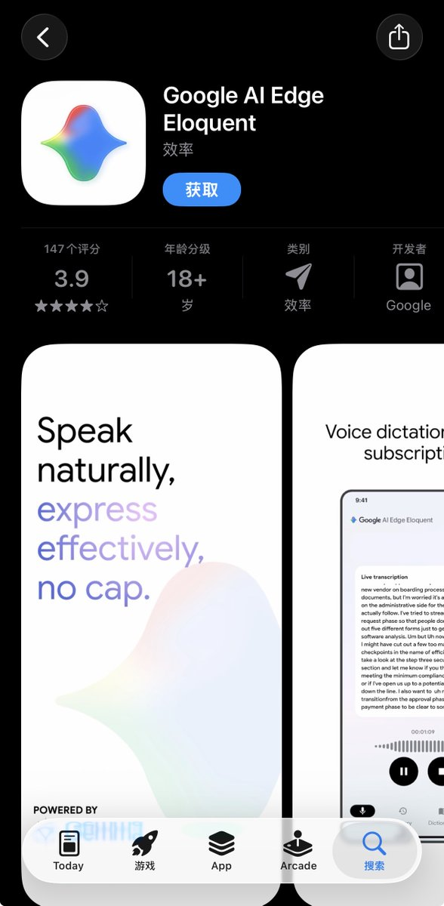

Wesley
@Wesley10032
@manateelazycat iOS最佳开发者Google
macOS最佳开发者Microsoft
Android最佳开发者Apple

Andy Stewart
@manateelazycat
Google 推出了一款“AI 语音听写＋文字润色”App，核心用途是把口语化、断断续续的讲话整理成可直接使用的文字，应该可以简单理解为离线的 Typeness
最黑色幽默的地方在于，当前只有 iOS 客户端，没有 Android🤡
是谁说最好的苹果应用开发商是微软来着，我看是 Google 吧🤣 https://t.co/t43IpJNf0U